Vitrines Hermès France H19
2019
Je conçois des systèmes qui permettent aux idées de devenir matière. Entre design paramétrique, fabrication numérique et savoir-faire artisanaux, je développe des objets, des scénographies et des dispositifs — différentes expressions d'une même pratique de recherche. En atelier comme en remote, entre Marseille et Paris.
Tous les projets présentés ici participent d'une même recherche — différentes expressions d'une pratique en constante évolution.


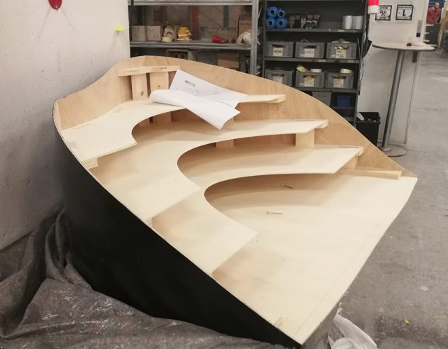


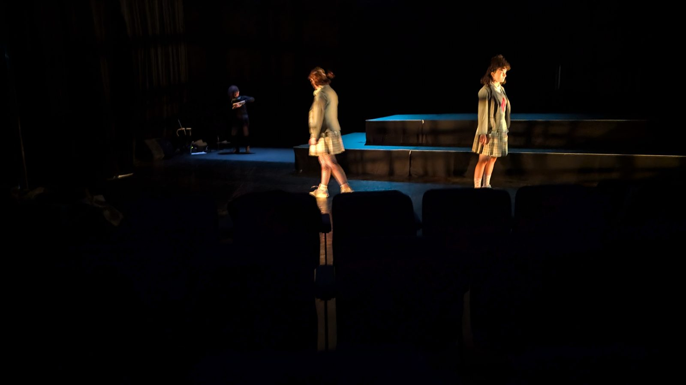
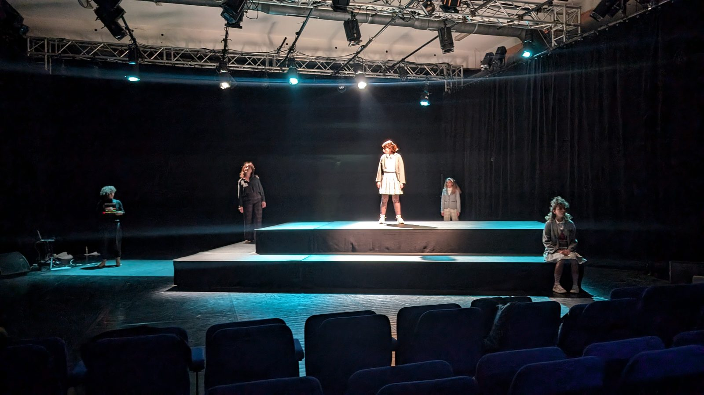
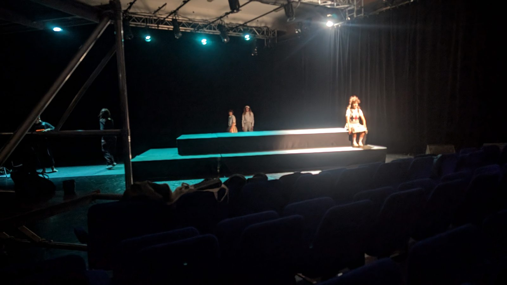
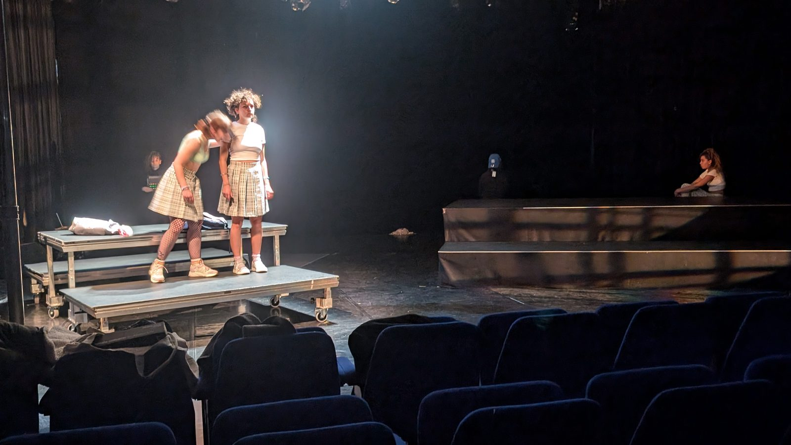
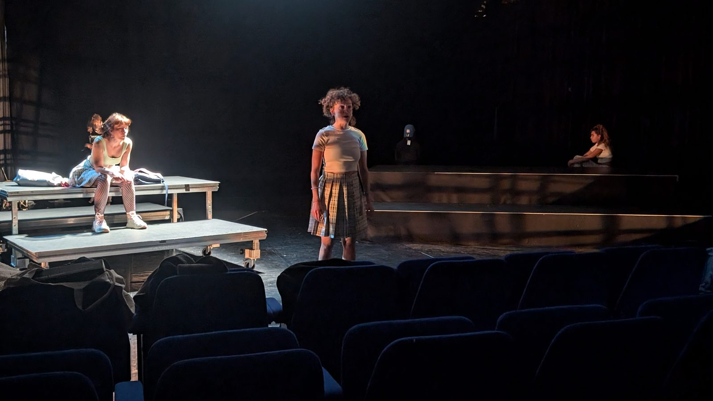
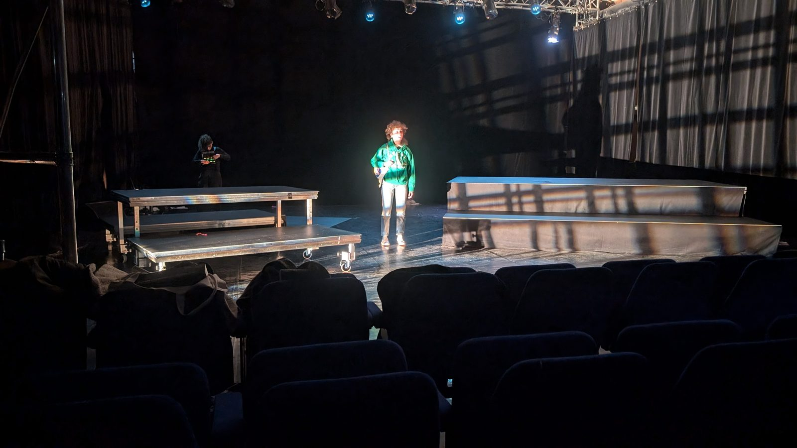
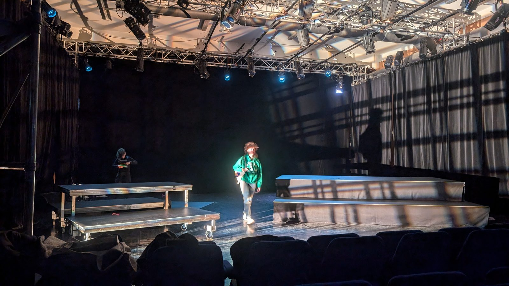
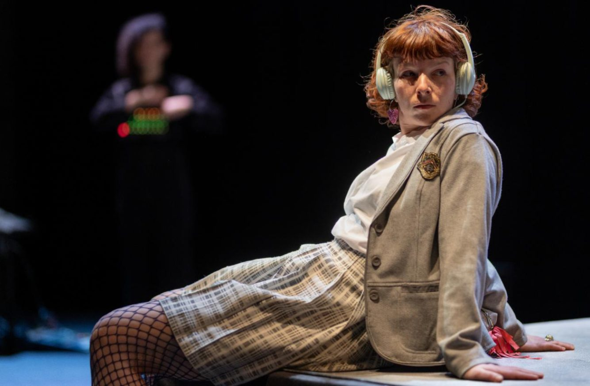
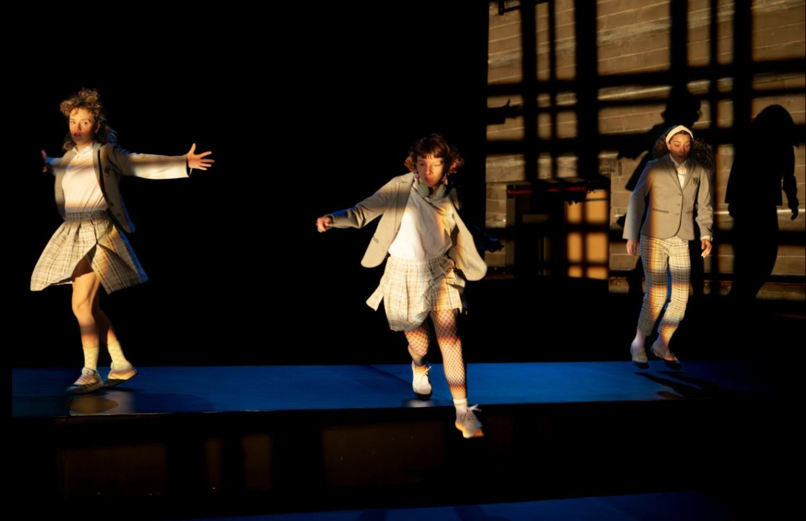
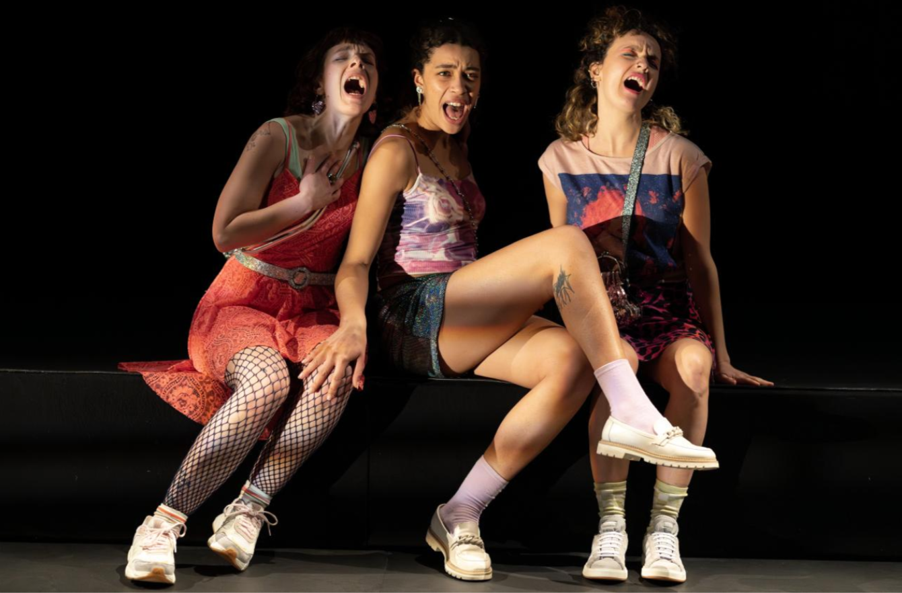


Après plusieurs années passées à développer des dispositifs pour d'autres, FenFutures est devenu l'espace où cette recherche peut évoluer librement. Chaque projet prolonge une même question : comment de nouveaux outils peuvent-ils enrichir les gestes existants plutôt que les remplacer ?
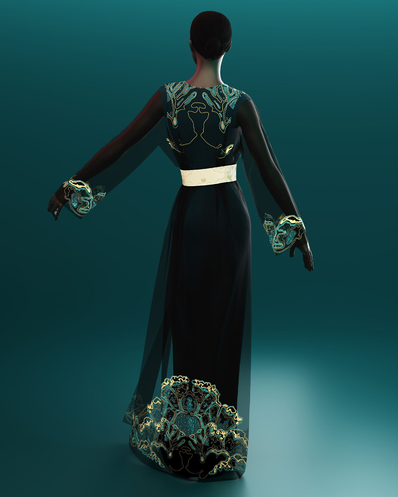
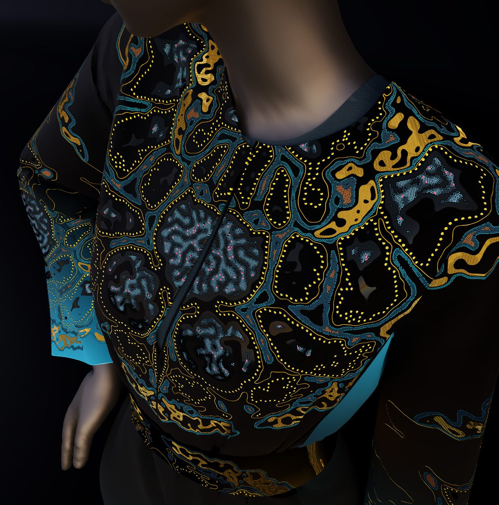
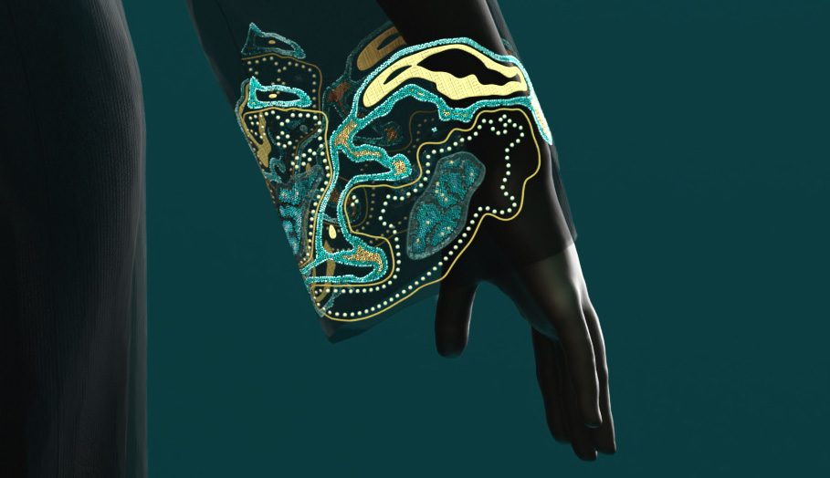
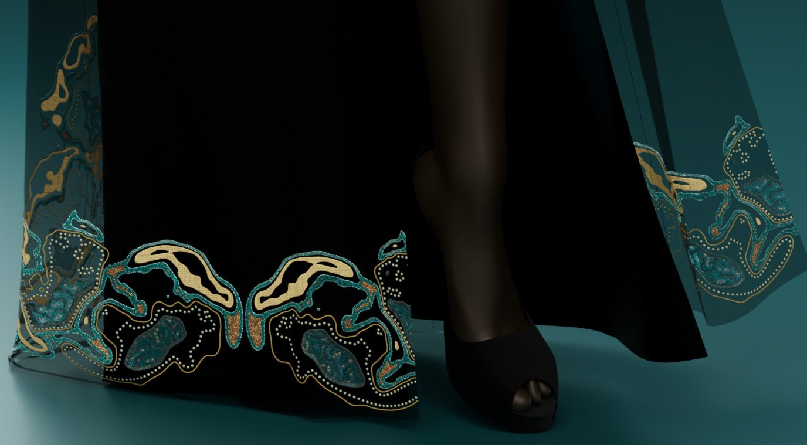
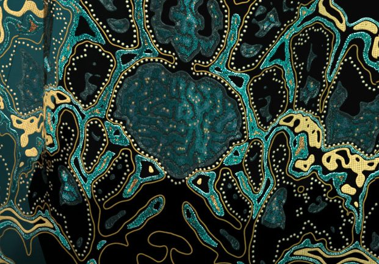
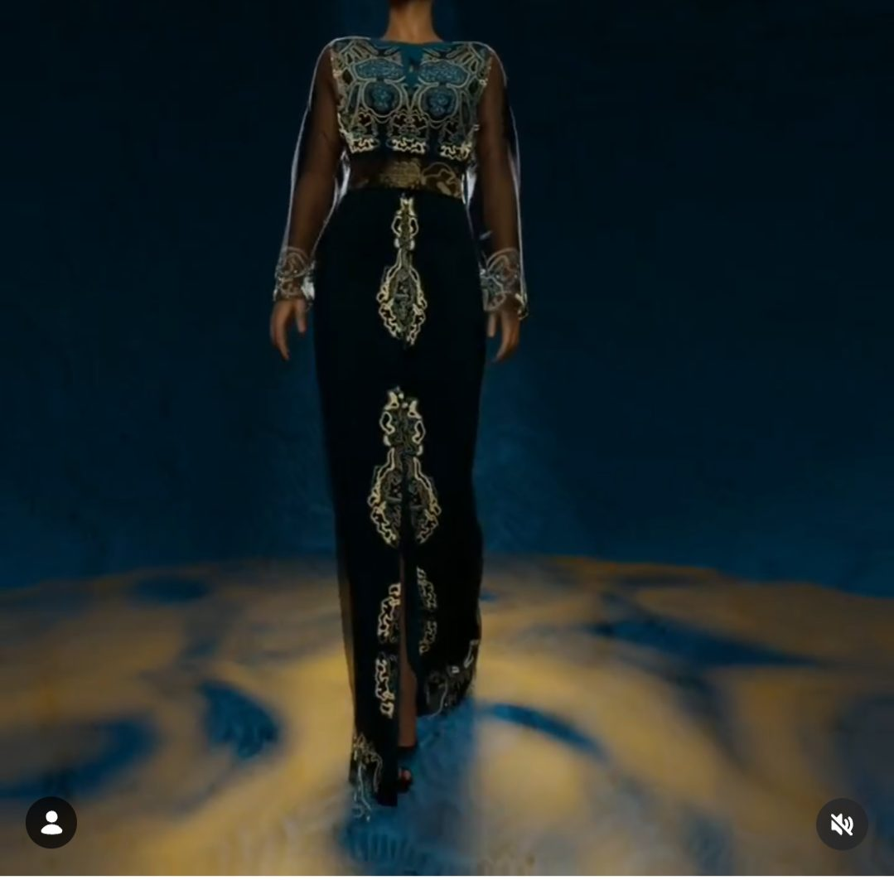

Recherche hybride en trois strates : conception paramétrique, production digitale, expérimentation physique. Le projet qui illustre le mieux le pipeline complet — du fichier Grasshopper à la vidéo de défilé final.
En parallèle, expérimentation physique : pièces d'impression 3D explorant la broderie et le perlage comme matière imprimée — modèles construits sur Grasshopper, pilotage slicer Bambu/Prusa. Chaque prototype est un objet autonome autant qu'un état intermédiaire du processus textile.


Première sculpture conçue par modélisation paramétrique. Imprimée en PETG transparent puis assemblée, elle marque le début d'une recherche sur les formes organiques générées par le calcul et révélées par la matière.
Vases et objets imprimés en 3D. Boutons sur-mesure pour ateliers de caftans de luxe. Moules conçus pour les artistes — de la définition paramétrique à la pièce finie.
Impression 3D sur tulle, perlage algorithmique, broderie paramétrique. Expérimentations sur matériaux biosourcés au Maroc. Pont entre ateliers locaux et outils numériques avancés.
Body Architecture 2.0 — développés pendant le workshop de Filippo Nassetti. Workshop d' avec Amir Fakhrghasemi. Défilé digital comme forme de recherche sur la présence du vêtement.
Collaboration avec artisans marocains sur des motifs conçus algorithmiquement et brodés à la main. Dialogue entre la définition Grasshopper, l'outil et la transmission du geste.
Disponible — missions freelance, intermittence du spectacle, portage salarial. Marseille · Paris · remote.